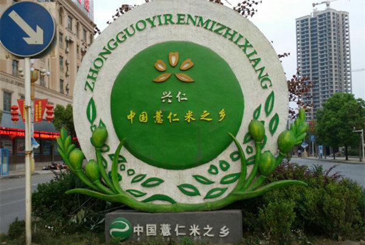
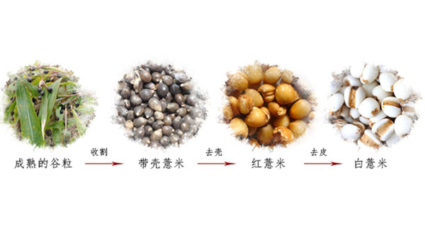

贵州兴仁被誉为中国薏仁米之乡，薏仁米是当地出名的特产。兴仁县位于贵州省黔西南州中部，境内为丘陵地区，地形起伏大，是典型的山区农业县。这样的地形地貌，加上没有任何工业园区的污染，没有喷洒任何的农药，种出来的粮食都可以说是独一无二的。薏仁米也成为当地山区农民的主要作物。

薏米的种植最佳时间是每年的三月下旬至四月中旬，这时候下地种植出来的薏米结出的果实粒大饱满，种植薏米的土地要选择在向阳、肥沃、排水良好的沙壤土。
薏米成熟后，有两米多高，普通的收割机没办法收割，所以乡亲们都是用人工收割的。家家都有十来亩薏米地，每到收割时，大家只能像蚂蚁搬家似的，今天采一点、明天采一点。收割下来的植株还需要经过打稻、晒干、碾磨三道工序，不同于工业化的流程，乡亲们都还是用的祖祖辈辈流传下来的手工打稻法。
打下薏谷后，用筛子筛掉薏禾薏枝。纯手工的收割打稻是很费时费力的，忙活了半天，才打下了这么一点，正常一个人一天顶多也就能打下200斤的薏谷。兴仁薏米一年只产一季，收割完后要晒15天才能完全晒干，晒干后可以放上一年。薏谷要经过五道工序才能脱干净。
就算经过这么多道工序，还是有些薏米没有脱壳干净，还得人工挑拣一遍的。真是粒粒皆辛苦。所以我们要做的是为他们搭建一个平台，让他们的辛苦能够得到更多的回报，同时也能给您带来健康与实惠。
传统碾磨的薏米，完全原生态无添加，但难免会有一些碎粒，或一点未被碾壳的漏网之米。
熬制薏米粥要提前半天将薏米仁，紫米、大米放在水里浸泡着，这样做出来的粥吃起来更糯。 1.准备好薏米、紫米、大米。红莲子、大枣、老冰糖。 2.将薏米、紫米、大米提前半天泡在水中。 3.把薏米、紫米、大米分别放入锅中直到熬制的粥汤看上去比较粘稠。 4.将莲子、大枣放进锅中熬制五分钟左右，加入老冰糖就可以开锅食用了。
薏仁米是稻谷脱去外保护皮层薏谷壳后的颖果，内保护皮层(果皮、种皮、珠心层)完好的薏米籽粒，由于内保护皮层粗纤维、糠蜡等较多口感较粗，质地紧密，煮起来也比较费时，但其瘦身效果显著。与普通精致白薏米相比，糙薏米维他命、矿物质与膳食纤维的含量更丰富，被视为是一种绿色的健康食品。
薏米富含人体所需的营养物质和微量元素，营养物质和微量元素平均含量为:蛋白质19.4 %、脂肪6.4 %、碳水化合物67.2 %、热量1498千焦耳/100 g、膳食纤维0.8 %、钾313 mg/100 g、钠0.6 mg/100 g、钙49 mg/100 g、磷299 mg/100g、铁2.9 mg/100 g、镁126mg/100 g、铜0.07 mg/100 g、锰1.89 mg/100 g、锌1.89 mg/100 g、硒3.61μg/100g、维生素E0.38 mg/100 g、硫胺素0.22 mg/100 g、核黄素0.15 mg/100 g、尼克酸1.5 mg/100 g、氨基酸15.71 g/100 g(其中人体必需氨基酸5.63 g/100 )。
美白肌肤—含有维生素E，常食可以保持人体皮肤光泽细腻，改善肤色 防痛抗癌—所含的硒元素能有效抑制瘤细胞的繁殖.薏米在国外被看成“抗癌食品” 利水渗湿—有利水消肿、健脾去湿、清热排脓等功效.为常用的利水渗湿药 健脾胃、促代谢—促进新陈代谢和减少胃肠负担，可作为病中或病后体弱者的补益食品
1、 贵州兴仁薏仁米少许浅棕色种皮，颗粒小、饱满，呈乳白色或青灰色;其他产地大薏米粒大，斑多，碎粒多。 2、新鲜的贵州兴仁薏仁米有米谷清香;市场常见有熏硫或发霉味道，不香。 贵州小薏仁与大薏仁对比
3、贵州兴仁薏仁米不仅有丰富的营养价值，更有不可小着的药用价位;其他产地的大薏米没有药用价位，霉变米不仅起不到养生效果，长期食用对有害健康。 4、贵州兴仁薏仁米一年一季，生长期长，产量低;其他产地的大薏米一年多季，产量较高。